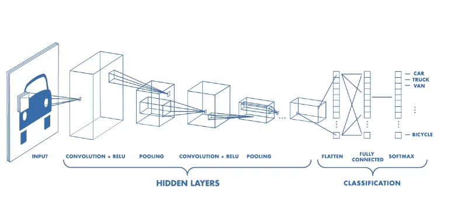
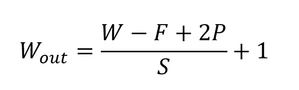
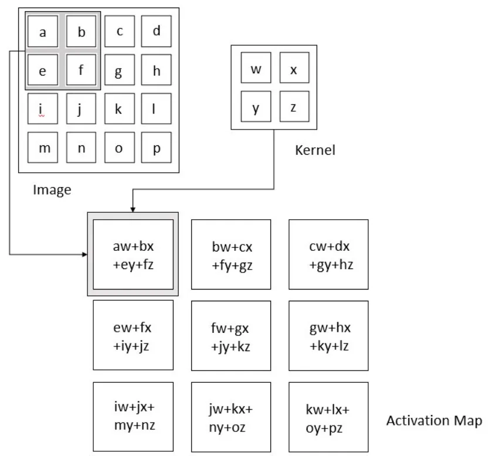
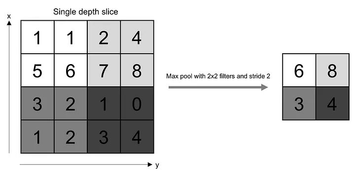

Convolutional Neural Network Architecture
A CNN typically has three layers: a convolutional layer, a pooling layer, and a fully connected layer.
Convolution Layer
The convolution layer is the core building block of the CNN. It carries the main portion of the network’s computational load.
This layer performs a dot product between two matrices, where one matrix is the set of learnable parameters otherwise known as a kernel, and the other matrix is the restricted portion of the receptive field. The kernel is spatially smaller than an image but is more in-depth. This means that, if the image is composed of three (RGB) channels, the kernel height and width will be spatially small, but the depth extends up to all three channels.
During the forward pass, the kernel slides across the height and width of the image-producing the image representation of that receptive region. This produces a two-dimensional representation of the image known as an activation map that gives the response of the kernel at each spatial position of the image. The sliding size of the kernel is called a stride.
If we have an input of size W x W x D and Dout number of kernels with a spatial size of F with stride S and amount of padding P, then the size of output volume can be determined by the following formula:
This will yield an output volume of size Wout x Wout x Dout.
Pooling Layer
The pooling layer replaces the output of the network at certain locations by deriving a summary statistic of the nearby outputs. This helps in reducing the spatial size of the representation, which decreases the required amount of computation and weights. The pooling operation is processed on every slice of the representation individually.
There are several pooling functions such as the average of the rectangular neighborhood, L2 norm of the rectangular neighborhood, and a weighted average based on the distance from the central pixel. However, the most popular process is max pooling, which reports the maximum output from the neighborhood.
If we have an activation map of size W x W x D, a pooling kernel of spatial size F, and stride S, then the size of output volume can be determined by the following formula:

This will yield an output volume of size Wout x Wout x D.
In all cases, pooling provides some translation invariance which means that an object would be recognizable regardless of where it appears on the frame
Fully Connected Layer
Neurons in this layer have full connectivity with all neurons in the preceding and succeeding layer as seen in regular FCNN. This is why it can be computed as usual by a matrix multiplication followed by a bias effect.